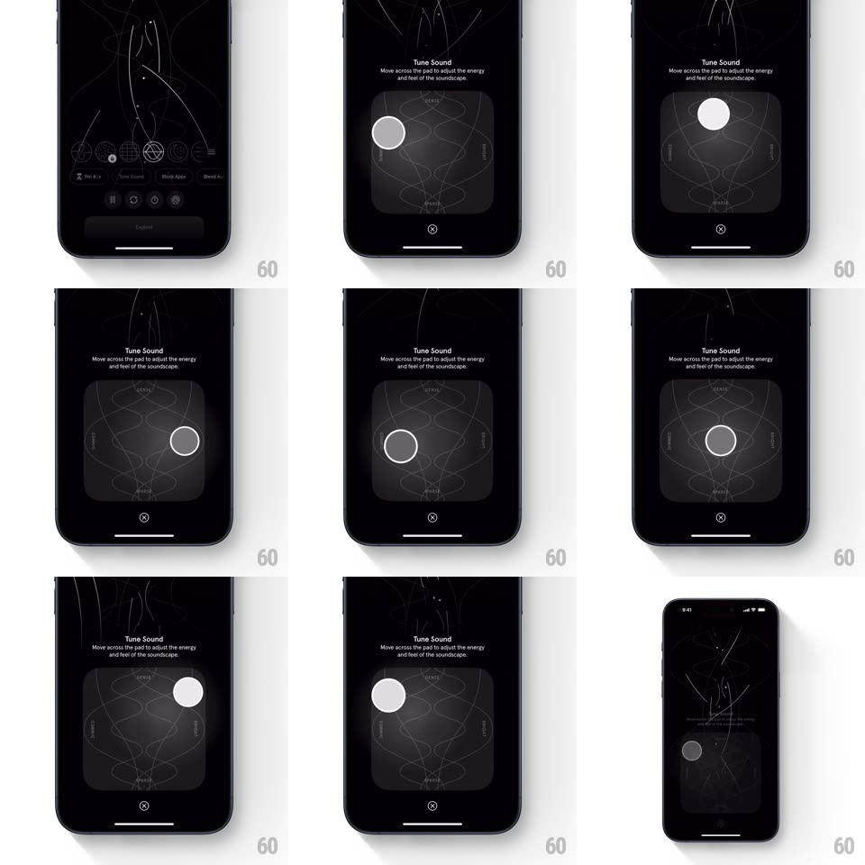

Media
Frame-by-frame

Rebuild this interaction 1:1: Endel's Tune Sound pad - a 2D square pad over generative white line art; dragging the white puck across the pad morphs the swirling background waveforms in real time, reshaping the soundscape between DEEPER and BRIGHTER poles.

Rebuild this interaction 1:1: Endel's Tune Sound pad - a 2D square pad over generative white line art; dragging the white puck across the pad morphs the swirling background waveforms in real time, reshaping the soundscape between DEEPER and BRIGHTER poles. ## Integration Integration: stack-agnostic spec - springs given as stiffness/damping, timed motions as duration + curve; map every value to your framework and animation library of choice. ## Scene Black screen: "Tune Sound / Move across the pad to adjust the energy and feel of the soundscape" above a large rounded-square pad; faint axis words on its edges (DEEPER bottom, BRIGHTER top); a white circle puck; behind and around everything, thin white generative lines swirl like ink in water; X closes below the pad. ## Motion spec Pattern: 2D performance pad driving generative art. - Drag the puck: it follows the finger freely in 2D (1:1, no grid); the pad's inner texture brightens around the puck (radial glow ~120px radius). - The background line art morphs live with puck position - toward BRIGHTER the lines thin, quicken, and spread upward; toward DEEPER they thicken, slow, and pool low; horizontal position shifts the swirl's density left/right. - Release: the puck stays where dropped (no snap-back); the lines ease to their new resting pattern (600ms) and keep drifting slowly (ambient loop). - The puck breathes gently while idle (scale 1 <-> 1.06, 2.4s). ## Calibration - The mapping is continuous - every pixel of the pad has a distinct visual state. - Lines are always white-on-black; expression comes from weight, speed, and density only. ## Reduced motion Lines crossfade between pole states instead of continuous morph. ## Don't miss - The pad keeps a faint orbital diagram texture of its own - it is an instrument, not a plain square. - The puck is solid white with a thin dark inner ring - visible against any line density.